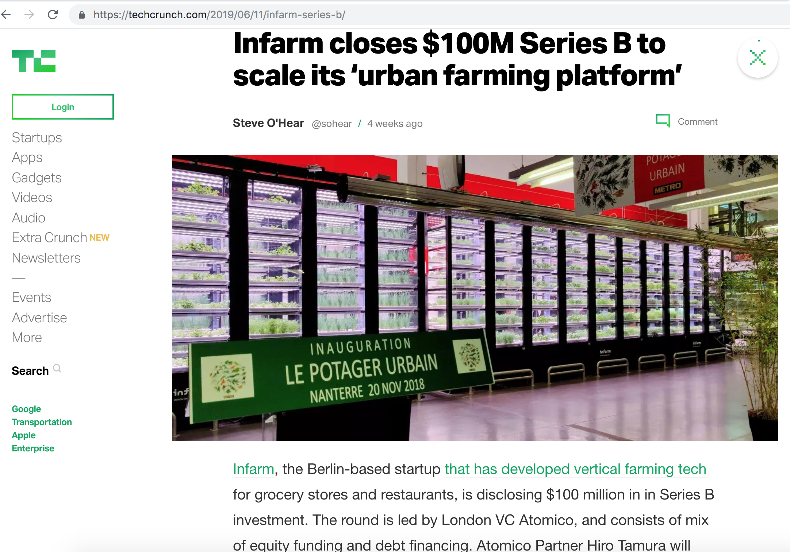
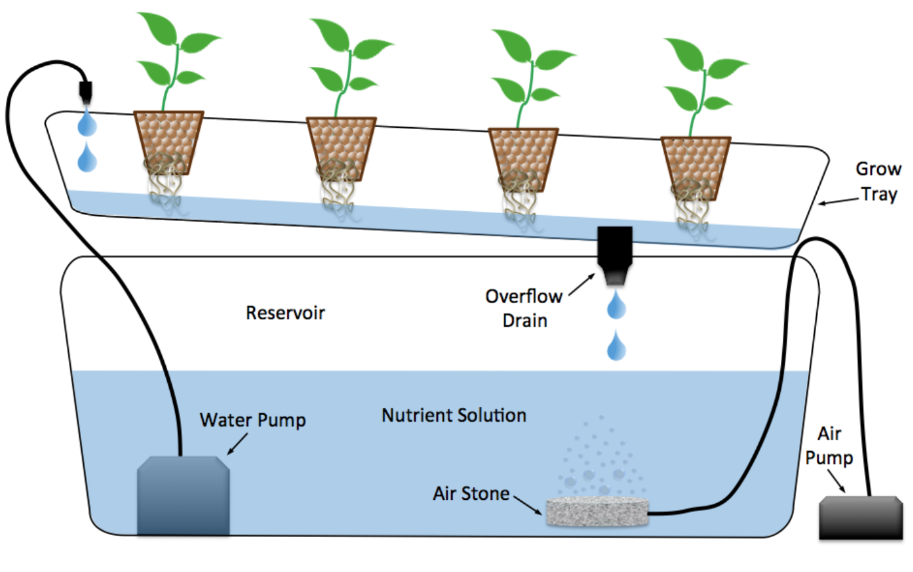
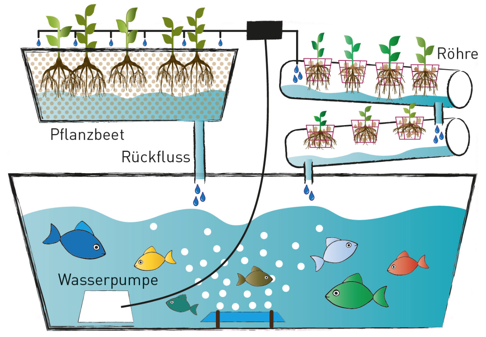
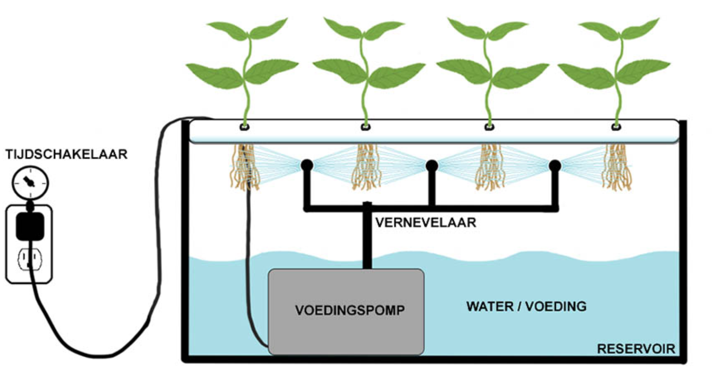

Urban farming & water fountain projection
Disclaimer
- all said here is my personal opinion
- you're more than welcome to dispute :)
- based on personal research & experience
- focusing only on soil-less methods

Currently working here
What is urban farming?
- producing food in dense urban areas
- attempt to rethink food supply chain
- grow where you are mindset
- pioneered by NASA since 90s
Benefits
- reducing CO2 footprint (less transportation)
- pesticide free (if done right)
- great product quality
- emphasis on local produce
- more sustainable? :)
- > 80% water savings compared to normal agriculture
- vertical scaling
Drawbacks
- fertilizers production!
- need for controlled environment(not easy)
- initial investment
- hygiene is key
- legislation
- how much organic it is?
Soil-less urban farming 101
- water tank
- growing 'medium'
- scheduler(s)
- pumps & sprays (depends on type)
- usually artificial lights
- climate control system
- tuning :)
Hydroponics
- known since Babylon
- easiest
- passive X active
- ebb & flow X drip

Aquaponics
- enhanced hydroponics
- fish in tank
- fully organic
- fish supply plants & vice versa

Aeroponics
- low / hi pressure
- rotation / misting sprays
- technically most advanced
- hard to be organic
- best plant quality

My prototype '16 & '17
- two 60 x 40 x 30 cm boxes
- low pressure aquarium pump (aeroponics)
- rotational sprays
- modular case construction
- custom made LED 100W light
- diamond reflective foil
Water fountain
in front of Janáčkovo divadlo